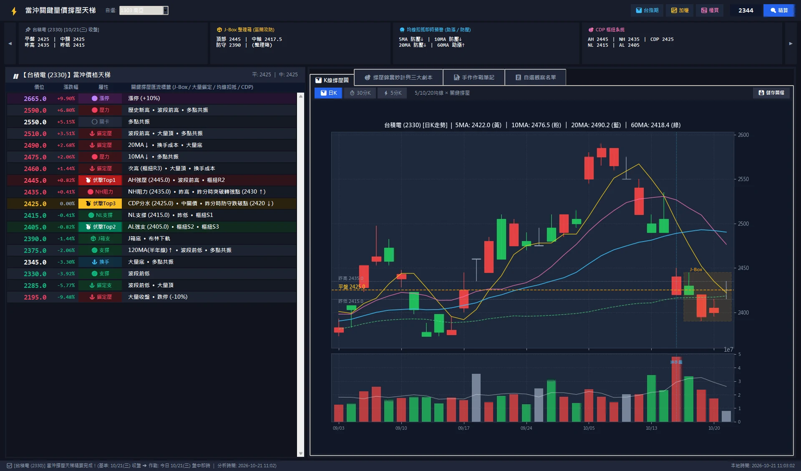
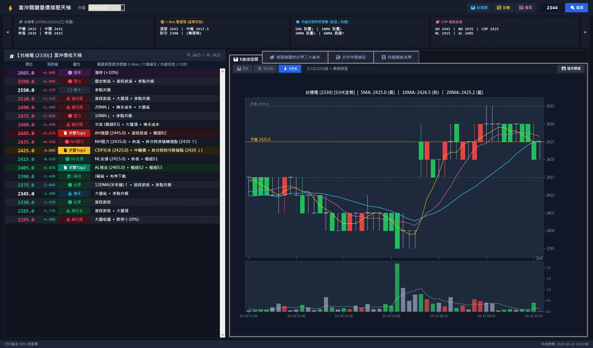
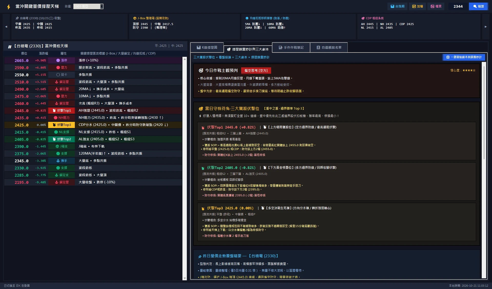
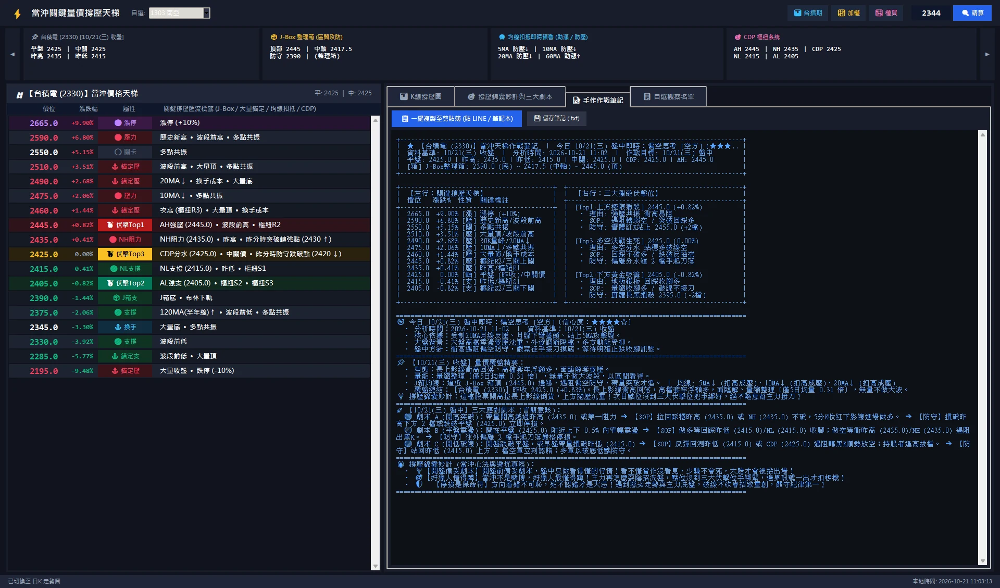
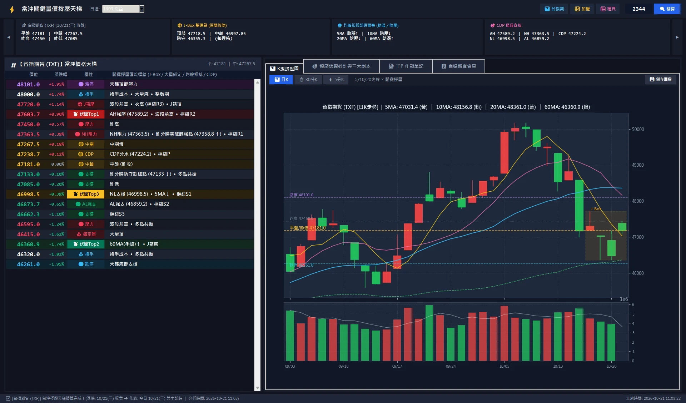

壹 ・ 作品頁面
一把尺，
量出今天的每一階。
「當沖撐壓孔明錦囊」是一套台股當沖的關鍵價位精算系統。輸入一個代號，它去抓行情、算出從漲停到跌停的整座價格天梯，標出三個最值得等待的伏擊位，然後把開高、開平、開低三個劇本連同進場、停損、目標一起寫好。你在桌面視窗看到的，就是天梯、撐壓圖、劇本，和一份可以一鍵複製到手機的純文字筆記。
畫面導覽 ・ 2026-10-21 盤中
六步，走一遍桌面版。
以下是桌面版的真實畫面。朱紅框是每一步要看的地方，會自動輪播，也可以點右側步驟或用鍵盤左右鍵。如果你是第一次看，建議先到「第一次看」，那裡會一塊一塊解釋畫面。





核心運算
三個規則，撐起整座天梯。
一、跳動檔位對齊
證交所的六級檔位規則。每一個算出來的價位都先對齊到檔位，才會掛上天梯。
二、CDP 五價樞紐
用昨天的高、低、收算出今天的五條線。以台積電 2026-10-21 為例。
三、三大伏擊位
把所有撐壓疊在一起，共振最強的三個點。這是台積電今天的三封錦囊：
除了這三個規則，引擎還疊上樞紐 R1 到 S3、5 / 10 / 20 / 60 / 120 日均線的扣抵方向、J-Box 整理箱、爆量換手成本、布林極值與波段前高前低，每個價位依匯流數量計算「共振強度」，再排成天梯。
它會替你做的六件事
輸入一個代號，它替你做六件事。
以台積電 2330 今天為例。你只做第一步：輸入代號，然後等幾秒。
抓行情
自動抓最近六個月的日 K、30 分 K、5 分 K，和現在的即時價。你什麼都不用準備。
對齊檔位
把所有價位對齊到跳動檔位。台積電一檔 5 元，所以你看到的都是 2420、2425 這種真的能掛的價格。
算出今天的線
用昨天的高低收算 CDP 五價與樞紐，再加上均線方向、J-Box 箱體、大量區。今天 CDP 2422.5、箱頂 2445、箱底 2390。
疊成天梯
同一個價位有幾個理由，就疊幾分。從漲停 2660 到跌停 2180 排成 19 階，理由越多的階越亮。
挑三個位置
理由最多的三階變成伏擊位：2440、2400、2420。其他的階可以看，但不建議出手。
寫好三個劇本
開高、開平、開低各一封：條件、進場、停損、目標都填好，連「假跌破」的例外都寫了。
期交所即時報價
Yahoo Finance 歷史 K 線
2,888 檔名稱對照
均線扣抵 ・ J-Box
大量區 ・ 共振評分
撐壓圖 ・ 三個劇本
可複製的作戰筆記
| 支援標的 | 台股上市上櫃個股、台指期 TXF、加權 TSE、櫃買 OTC |
|---|---|
| 時間週期 | 日 K、30 分 K、5 分 K |